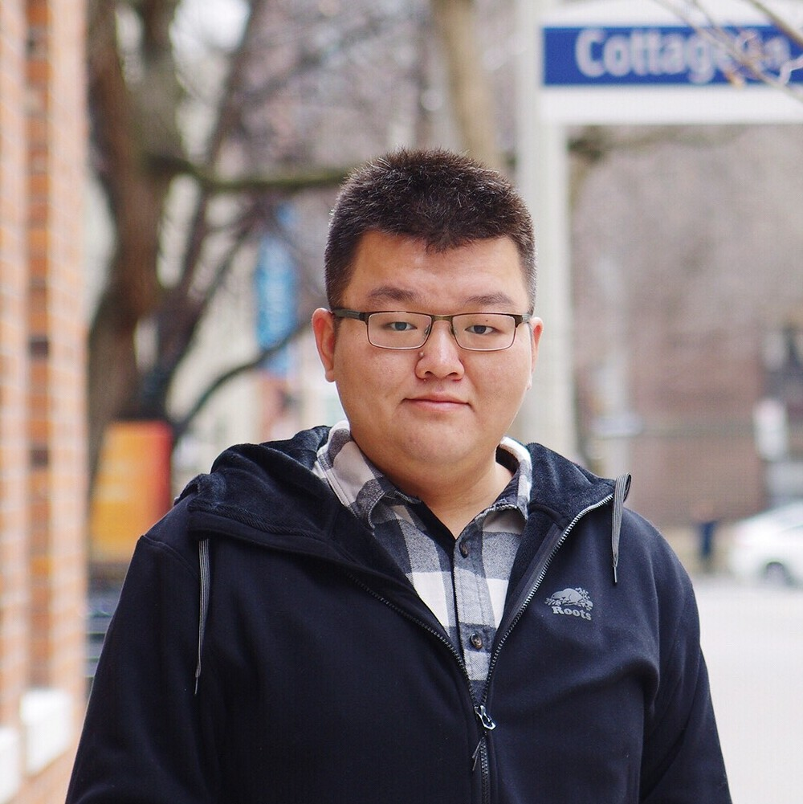
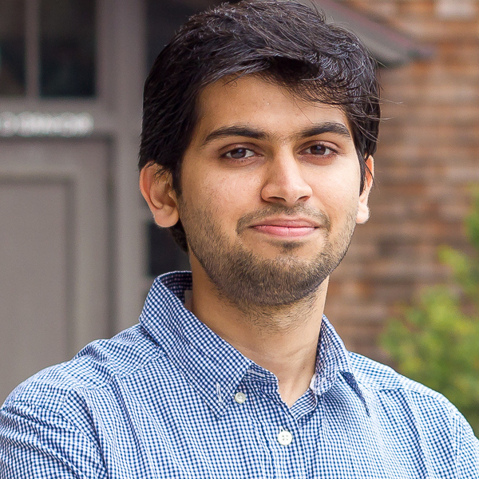
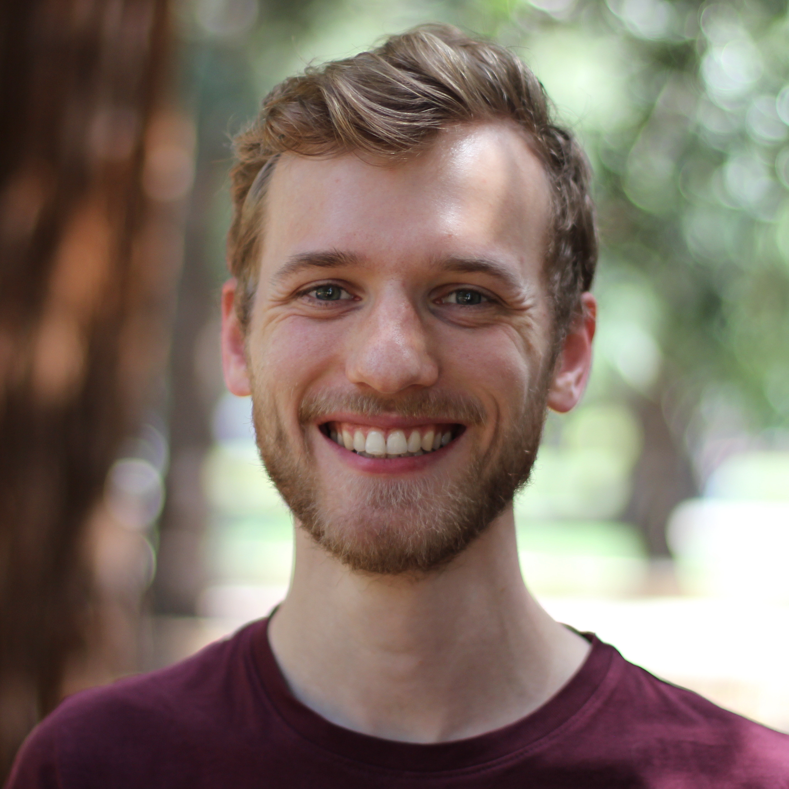
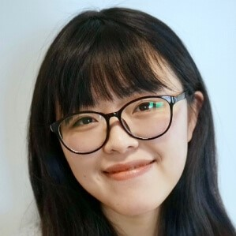

3D Scene Understanding for Vision, Graphics, and Robotics
CVPR 2023 Workshop, Vancouver, June 18th, 2023
Invited Speakers
|  |  |
 | |
| Shenlong Wang (UIUC) | Georgia Gkioxari (Caltech) | Andy Zeng (Google) | Deepak Pathak (CMU) |
 |
 |  |  |
| Xiaolong Wang (UCSD) | Vincent Sitzmann (MIT) | Siyu Tang (ETH Zurich) | Angela Dai (TUM) |
Important Dates
| SQA3D Challenge Submission Deadline | June 10 2023 |
| Notification to SQA3D Challenge Winner | June 11 2023 |
| Workshop Date | June 18 2023 (Day 1 of CVPR 2023) |
Schedule (Pacific Time)
- 09:00 am - 09:15 am: Opening Remark: Hao Su
- 09:15 am - 09:45 am: Invited talk: Xiaolong Wang
- 09:45 am - 10:15 am: Invited talk: Georgia Gkioxari
- 10:15 am - 10:45 am: Oral Presentation 1
- 10:45 am - 11:15 am: Invited Talk: Siyu Tang
- 11:15 am - 11:45 am: Invited Talk: Shenlong Wang
- 11:45 am - 12:15 pm: Oral Presentation 2
- 12:15 pm - 01:45 pm: Lunch Break
- 01:45 pm - 02:00 pm: Announcement of Challenge Winner and Spotlight Talk
- 02:00 pm - 02:30 pm: Invited Talk: Vincent Sitzmann
- 02:30 pm - 03:00 pm: Invited Talk: Deepak Pathak
- 03:00 pm - 03:30 pm: Oral Presentation 3
- 03:30 pm - 04:00 pm: Invited Talk: Andy Zeng
- 04:00 pm - 04:30 pm: Invited Talk: Angela Dai
- 04:30 pm - 05:00 pm: Oral Presentation 4
Oral Presentation
10:15 am - 10:45 am: Oral Presentation 1- Yufei Ye Affordance Diffusion: Synthesizing Hand-Object Interactions
- Krishna Kumar Singh Putting People in Their Place: Affordance-Aware Human Insertion into Scenes
- Le Xue ULIP: Learning a Unified Representation of Language, Images, and Point Clouds for 3D Understanding
- Georgia Gkioxari Multiview Compressive Coding for 3D Reconstruction
- Zian Wang Neural Fields meet Explicit Geometric Representations for Inverse Rendering of Urban Scenes
- Samir Yitzhak Gadre CoWs on Pasture: Baselines and Benchmarks for Language-Driven Zero-Shot Object Navigation
- Yawar Siddiqui Panoptic Lifting for 3D Scene Understanding with Neural Fields
- Songyou Peng (TBD) OpenScene: 3D Scene Understanding with Open Vocabularies
- Siyuan Huang Diffusion-based Generation, Optimization, and Planning in 3D Scenes
- Ji Hou Mask3D: Pre-training 2D Vision Transformers by Learning Masked 3D Priors
- Zicong Fan ARCTIC: A Dataset for Dexterous Bimanual Hand-Object Manipulation
- Tong Wu OmniObject3D: Large Vocabulary 3D Object Dataset for Realistic Perception, Reconstruction and Generation
Overview
Despite the rapid growth of scene understanding, existing methods have well-known limitations: (1) How to obtain detailed and fully labeled large-scale 3D data to train and evaluate models? (2) What representations to use for reasoning about support, contact, and extent? (3) How to differentiate clutter from a broad range of classes of interest? (4) How to facilitate the interaction of physical agents in the real world? (5) How to infer the functionality and affordance of 3D scenes and anticipate activities in the 3D world? (6) Witnessing the recent advances in NLP and 2D computer vision, how can we develop/utilize generalist and large models for 3D scene understanding and related applications (ex. robotic planning)? These are just some of the many questions that are unanswered to this day.
The goal of this workshop is to foster interdisciplinary communication of researchers that are interested in addressing these challenges (computer vision, computer graphics, NLP, and robotics) so that more attention of the broader community can be drawn to this field. Through this workshop, current progress and future directions will be discussed, and new ideas and discoveries in related fields are expected to emerge..
Specifically, we are interested in the following problems:
- Datasets: What is a desired yet manageable breadth for a dataset to serve various tasks at the same time and provide ample opportunities to combine problems? What level of detail is required for the annotation? What are the shortcomings of recent evaluation metrics and what are ways to fix those?
- Representations: What are representations most suitable for a particular task like reconstruction, physical reasoning, etc.? Can a single representation serve all purposes of 3D scene understanding?
- Reconstruction: How to build efficient models which parse and reconstruct the observation from different data modalities (RGB, RGBD, Physical Sensor)?
- Reasoning: How to formulate reasoning about affordances and physical properties? How to encode, represent and learn common sense?
- Interaction: How to model and learn to interact with objects within the scene?
- Generalist models: How can we develop 3D vision models with multi-task, zero-shot, and few-shot capabilities in holistic scene understanding tasks and related applications?
- Bridging fields: How to facilitate researches that connect vision, graphics, and robotics via 3D scene understanding?
Organizers
 |
 |
 |
|
| Siyuan Huang* (BIGAI) | Chuhang Zou* (Amazon) | Alexander Schwing (UIUC) | Xiaojian Ma (UCLA) |
 |
|||
| Hao Su (UCSD) | Yixin Chen (BIGAI) | Tengyu Liu (BIGAI) | Yixin Zhu(PKU) |
Senior Organizers
 |
 |
 |
| David Forsyth (UIUC) | Derek Hoiem (UIUC) | Song-Chun Zhu (BIGAI, PKU, THU) |